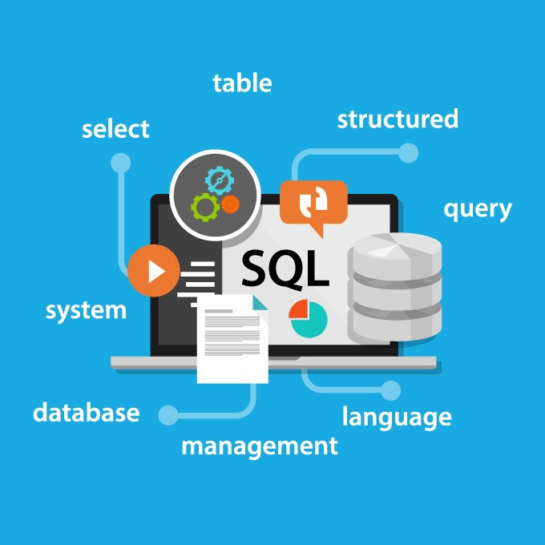
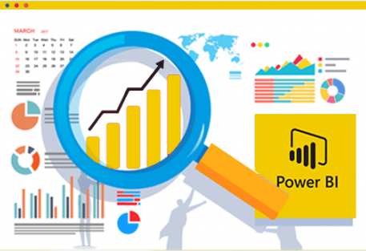

Updated: August 24, 2024
I am a proactive management information system student at the university of MSA and Bedfordshire
with strong academic achievement and volunteering experience.
Possess strong computer software,
hardware skills and communication skills. I am keen to pursue a professional career to become a Data
analyst.

In the Bike Sales project, we utilized Excel to clean and process sales data, ensuring accuracy and consistency.
Leveraging pivot tables, we created an interactive dashboard that provides insightful visualizations and trends,
aiding in strategic decision-making.

In the Layoffs dataset project, I utilized SQL to clean and preprocess the data, ensuring its integrity.
Through a series of queries, I identified key patterns and trends,
providing valuable insights into the factors influencing layoffs.

In this project, I utilized Power BI to clean and process sales data, ensuring data quality and consistency.
I then created dynamic visualizations and comprehensive sales reports,
providing actionable insights to drive business decisions.